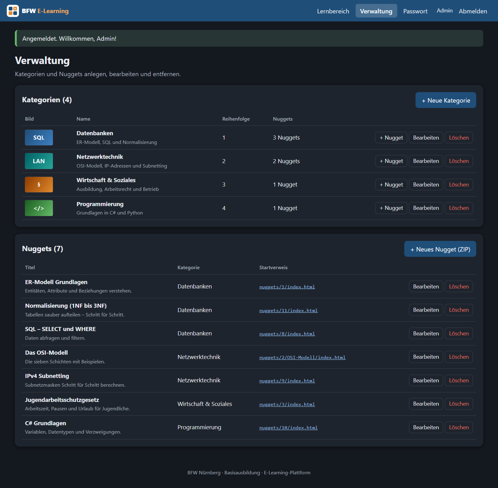
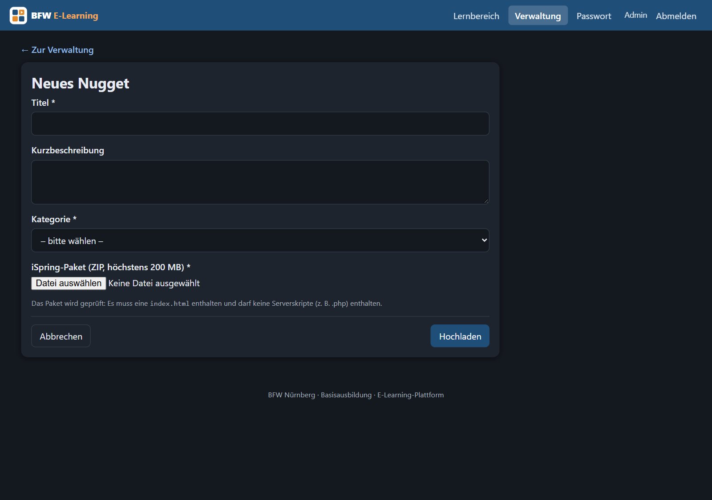

← Zum Lernbereich
Verwaltung
Geschützter Admin-Bereich – Vorschau mit Testdaten.
Die echte Anmeldung läuft nur auf dem PHP-Testserver. Hier siehst du den Aufbau.
Kategorien und Nuggets

Kategorien anlegen, bearbeiten und löschen; Nuggets zuordnen und verwalten.
Nugget hochladen

ZIP-Prüfung: index.html muss vorhanden sein, keine Serverskripte, maximal 200 MB.